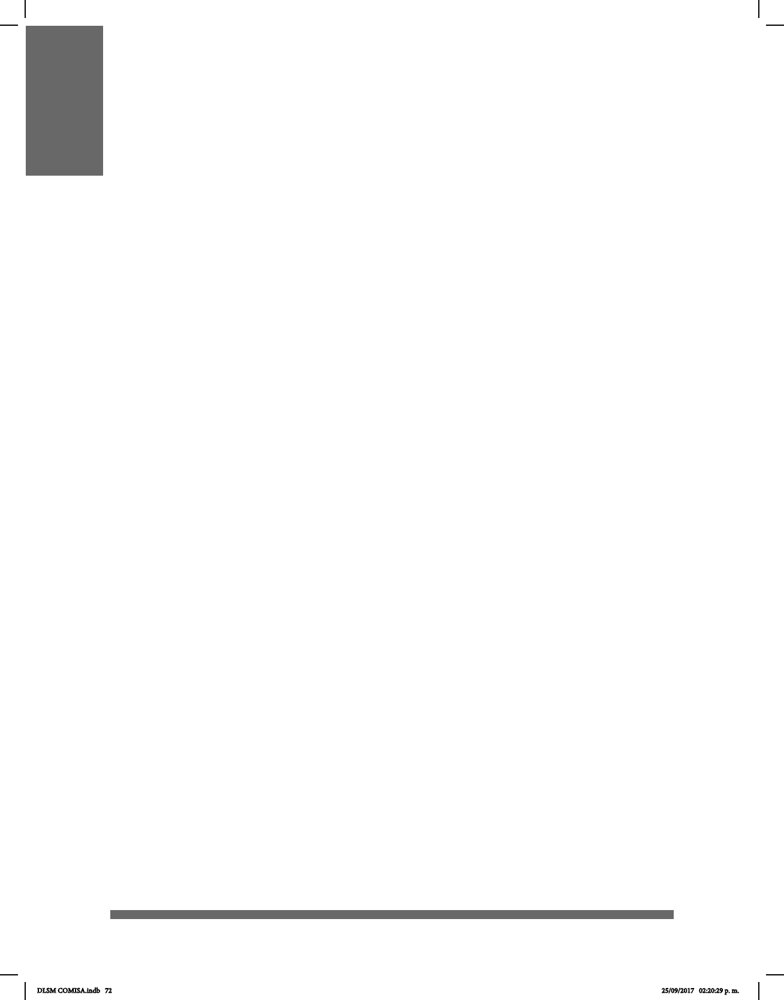

72
TIPOS DE SEÑAS
Las señas se dividen en cuatro tipos diferentes. Esto depende del uso de una o dos
manos o de su movimiento, sea simultáneo o no.
• Una seña manual (SM) se articula con una sola mano.
• Una seña bimanual (SB) se articula con dos manos a la vez de manera dispar, libre o
asimétrica.
• Una seña simétrica (SS) se articula con dos manos a la vez, siempre a través de
movimientos en espejo, idénticos e inversos (alternados) o inversamente proporcionales
(simultáneos).
• Una seña compuesta (SC) se articula a través de al menos dos señas simples o tres
conguraciones distintas.
Cuando las señas copian las características físicas de su referente, se les puede llamar
icónicas, por ejemplo, la seña de árbol.
En ocasiones se señan en alguna parte del cuerpo con las características del referente,
por ejemplo, manzana, que se articula en la mejilla.
Cuando no hay relación alguna entre el referente y el signicado, por ejemplo,
oportunidad o gracias, se les llama señas arbitrarias.
Las señas inicializadas o alfabéticas utilizan la inicial de la palabra en español como la
conguración de la seña, por ejemplo, los nombres de personas o los apelativos mamá
o alumno.
Las señas indéxicas toman el signicado del lugar al que se apunta o hacia donde se
encuentra el referente, es decir, son los deícticos o pronombres, por ejemplo: ahí, allá, él,
ella, yo, ellos.
Las señas numéricas se denominan así cuando la conguración de la mano forma
números, por ejemplo, Dinamarca (número 8), mujer (número 1), abanico (número 4) y
atención (número 6).
DLSM COMISA.indb 72 25/09/2017 02:20:29 p. m.